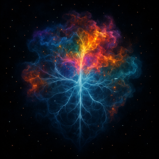

Imprint
Aleksandar Gazibara

Poziv
- Marko brate!
- E…ko je? Irena ti si? - reče pospano.
- Ja sam.
- Šta se desilo?
- Idem večeras na faks. Sutra mi gase karticu. Kapiraš?
- Kapiram brate. OK…
- Šaljem ti broj leta. Čekaj me sutra na aerodromu.
- Ok, vidimo se tamo.
- Hvala ti Mare, moram ovo da uradim.
- Luda si.
- Znam, pričamo sutra.
- Ćao.
Institut za granične nauke i biotehnologiju (Cirih)
Irena baci pogled na poslednju verziju svoje biografije:
„Irena Marić završila je master studije na Veterinarskom fakultetu u Beogradu, gde je privukla pažnju radovima o fiziologiji životinja i stresnim reakcijama kod domaćih vrsta.
Na osnovu tih rezultata dobila je poziv na specijalistički program na Institutu za granične nauke i biotehnologiju u Cirihu — kratkoročni kurs namenjen mladim istraživačima. Tamo se priključila multidisciplinarnom timu koji je razvijao novu generaciju mikrosenzora nalik paučini, prvobitno osmišljenih za medicinsku dijagnostiku.
Njena uloga bila je skromna: testiranje uređaja na životinjama. Ali upravo tada prvi put je naslutila da mreža može postati mnogo više od običnog senzora.“
Pomisli: koliko je ovo sve sad besmisleno.
Još od detinjstva bila je okrenuta više životinjama nego ljudima. Odrasla u podnožju planine, daleko od gradske vreve, imala je utisak da sa njima može da uspostavi kontakt na neki drugačiji način.
Neke su joj spontano prilazile, sa drugima je dugo razmenjivala pogled. U tim tihim susretima osećala je nešto što je kasnije teško umela da objasni — kao da se radi o pokušaju dublje, smislenije komunikacije, nečega što ljudi jednostavno ne umeju da prepoznaju.
Zato je izbor Veterinarskog fakulteta bio prirodan. Ali sada, dok sedi u sterilnoj zgradi Instituta, osećala je kako se jaz između tog detinjeg osećaja i ovih hladnih eksperimenata sve više produbljuje.
P-V-Net (Physio-Vector Net)
Uređaj koji su razvijali naučnici u Cirihu bio je zamišljen kao ultralagana mreža obložena nanosenzorima, koja prati ključne fiziološke parametre životinja — srčani ritam, moždane talase, disanje i hormonske markere poput kortizola i oksitocina. Za razliku od ranijih metoda, biosenzori registruju ove supstance direktno kroz kontakt s kožom i dlakom, bez potrebe za invazivnim procedurama.
Signal se prenosi fotonskim vlaknima otpornim na oštećenja, a integrisani GPS modul omogućava lociranje i pronalaženje mreže u prirodi. Nakon maksimalno jednog minuta mreža se sama otpušta i pada, čime se obezbeđuje da životinja ne trpi dugotrajan stres ili ograničenje kretanja.
Najnovija verzija imala je i nanopore sequencer — sićušan modul upleten u vlakna, sposoban da u tih nekoliko sekundi uhvati fragmente DNK. Zvanično nikada nije bio testiran, jer tim nije verovao da će takvi podaci imati realnu vrednost za trenutni projekat.
Irena je bila među onima koji su uređaj testirali, ali dok su ostali videli samo alat za prikupljanje podataka, ona je osećala da tu postoji nešto više.
Predložila je da ne stanu na pukom merenju, već da pokušaju nešto ambicioznije: sintezu svih tih signala u jedinstvenu sliku — Imprint. Holistički otisak unutrašnjeg stanja.
Intuicija, duboko usađena još od detinjstva, govorila joj je da se u tim obrascima krije put ka razumevanju onoga što se rečima ne može opisati.
Ali istraživački tim — naročito profesori — taj pravac nisu smatrali vrednim. „Previše subjektivno“, govorili su. „Nema praktičnu primenu.“
Očajna, obratila se svom starom drugu Marku, programeru koji je razvijao AI softvere za različite namene. Po njenim idejama započeo je rad na alfa verziji imprinta. Za svaki slučaj.
Posle meseci bezuspešnih pokušaja da ubedi kolege i nekoliko zvaničnih opomena, Irena je konačno izgubila strpljenje i napravila scenu u laboratoriji.
Već sledećeg dana stiglo joj je obaveštenje: saradnja prestaje i mora da vrati karticu za pristup.
„Gde mi je kartica? Evo je.“
Irena prisloni karticu na senzor. Kratak zvuk, zelena dioda zatreperi i vrata fakulteta se otvore.
Nikad nisam mislila da ću ovo uraditi. Možda sam luda. Ali moram.
U ovo doba hodnici su prazni. Hitrim pokretom upali samo ona svetla u hodniku koja su joj bila neophodna. Još desetak brzih koraka i već je bila ispred vrata laboratorije u kojoj je provela nezaboravne trenutke — ali i trenutke teškog nemira zbog sukoba sa kolegama.
Ovo nam je poslednji susret, pomisli Irena. Okretno se dokliza do ormana u kojem je stajao njen izum.
„Zovu ga P-v-Net… mogla sam i bolje ime da im smislim.“
Otkuca šifru. Vratanca se otvore. Uzima mrežu, ubacuje je u ranac i nestaje u noći.
Nikola Tesla
Verovatno je obezbedjenju u Cirihu izgledao kao neki džemper — pomisli Irena dok je uzimala kofer sa pokretne trake po kojoj je i dalje kružio prtljag koji vlasnici još uvek nisu preuzeli. Samo još carina… nadam se da je Marko već tu.Prošla je pasošku kontrolu i potom carinu, i pred njom se otvorio hol — nalik na podijum za izvodjače pod reflektorima u koje pažljivo zuri publika. Pogledala je levo, pa desno, ne uočivši poznato lice. Onda je osetila snažan zagrljaj.
— Gde si, čoveče, pomislila sam da nećeš doći.
— Ne budi luda. Je l’ sve u redu?
— Jeste. Uspela sam, niko me nije provalio.
— Super. Idemo.
Irena ga pogleda i na trenutak se osmehnu.
Marko je bio tip koji nikad nije izgledao kao „AI inženjer“. Više kao basista iz devedesetih: kožna jakna, umorne oči, a iza njih stalni proračuni.
Bio je doktorand na ETF-u, mašina za algoritme, klinac koji je još na trećoj godini faksa razbio MIT-ov takmičarski dataset.
— Jesi sigurna da znaš šta radiš? — upita je.
— Nisam, ali znaš da moram.
— Idemo do mene odmah?
— Može, nisam se mojima ni javila.
Jurija Gagarina 111
Markova radna soba bila je zatrpana kablovima, monitorima i hardverom. Na stolu — lemilica, bežična tastatura, a u uglu mali server-rack koji je neprestano zujao.
Irena spusti ranac na sto i polako izvadi mrežu. U senci LED lampi paučinasta struktura izgledala je kao da diše.
— Brate… izgleda kao da si ukrala komad magle — promrmlja Marko.
— Ha ha. Videćeš.
Rasprostrla je mrežu preko improvizovanog postolja.
— Je l’ ovo prvi put da je koristiš van lab-a? — upita on.
— Prvi put ikad da će raditi za ono za šta je napravljena. Sigurno ti je okej da je zakačimo na Bastera?
— Ma da. Baster! — viknu Marko, a iz kuhinje veselo dotrča njegov petogodišnji zlatni retriver.
— Uvek radoznao i nasmejan — reče Irena. — Obožavam ga.
— Najbolji pas — klimnu Marko. — Hajde onda, ja ga držim, ti stavi mrežu.
Irena brzim i nežnim pokretima prebaci mrežu preko psa.
— To je to?
— Pa da. Ideja je da se brzo i lako zakači. Tako ćemo moći i u prirodi.
— Okej, hajde da pokrenem softver.
Marko uključi hub. Na ekranu počeše da iskaču brojevi: puls, disanje, temperatura. Sve u redu, sve očekivano.
— Je l’ ti okej interfejs? — upita Marko. — Potrudio sam se da dobiješ sve ono što si do sad imala.
— Ovo je savršeno.
— Okej… a gledaj sad ovo — kliknu na opciju Generate Imprint u svom AI softveru. Na ekranu je zasvetlelo nešto nalik fraktalu, oblak u pokretu, pulsirajući u raznim bojama, kao da diše.
— Brate… — šapnu Irena. Oči su joj se caklile.
— Rekao sam ti da će AI da ga reši — nasmeši se Marko.
— Ludilo… moram da legnem. Gotova sam.
— Okej, ti možeš tamo u dnevnoj. Ja ću ovde. Nastavljamo ujutru.
Baster
Probudili su se nešto kasnije tog jutra. Marko je izveo Bastera u šetnju, a Irena je oboma skuvala kafu.
I dalje je bila pod utiskom: prvo, toga da je sada u svojoj zemlji — što nije bilo planirano. Potom, da je raskrstila sa fakultetom. A iznad svega, da je zapravo ukrala uređaj i da će zbog toga sigurno trpeti posledice.
Posle prvog naleta brige, setila se kako je izgledao prvi Imprint koji je Marko prethodne večeri generisao, i osetila radost i nestrpljenje. Na vratima se pojavio Marko sa uvek veselim Basterom.
Baster dotrča do Irene, a Marko reče:
— E, hvala za kafu, carice. Hoćemo?
— Hajde.
Prebacili su se u Markovu sobu.
— Dođi, Baki — reče Marko, pridržavajući Bastera dok mu je Irena navlačila mrežu.
— OK, to je to.
— Bravo, Baster — reče Marko i dade mu poslasticu da legne i smiri se.
— Dobro, hvatamo vitalne parametre: EEG i EKG. Sve izgleda normalno. Hajde ovaj put da probamo i kortizol.
— Kako beše to? Treba da lizne krzno?
— Aha. Kortizol mora s pljuvačke.
— OK… evo ga, pravimo Imprint sada.
Na ekranu se ukazao grafički prikaz u nekoliko boja. Oblik se menjao, talasi su se slagali u obrasce, dok se nije zaustavio u jedinstvenom, šarenom otisku.
— OK, šta gledamo? — upita Irena.
— Nije samo vizualizacija podataka — odgovori Marko. — To je AI sinteza u realnom vremenu. Sistem prikuplja moždane talase, srčani ritam, nivoe kortizola, obrasce disanja. Svaka boja, svaka linija, svaki intenzitet predstavlja spoj tih signala.
— Kad ih gledaš odvojeno, dobijaš samo brojeve i krive. Ali kada se ukrste u jednu sliku, dobijaš unutrašnje stanje bića u tom trenutku.
— Fantastično! OK, možemo dakle da napravimo neku vrstu emocionalnog atlasa... rečnika? — upita Irena.
— Baš to.
— Sjajno. Sad imamo referentnu vrendost, hajde možda da probamo Bastera kad je srećan?
— Može to kad bude vreme za hranu.- reče Marko i pomazi Bastera još jednom.
Sutradan su uspeli da zabeleže Basterov strah — pojavio se rotvajler iz komšiluka, pas s kojim je već imao sukobe. Kasnije su mu stavili mrežu i onda kada su oboje na nekoliko sati napustili stan. Snimak je tada uhvatio nešto drugo: tugu i anksioznost napuštenog psa.
Irena je bila zadovoljna ovim osnovnim snimcima. Video se potencijal. Njene pretpostavke nisu bile puka iluzija. Sledeći korak bilo je snimanje životinja u divljini. Mislila je da je Fruška Gora dobar kandidat za sledeću fazu.
Fruška gora
Probudili su se rano. Marko je prethodno veče natočio gorivo. Baster je sedeo na zadnjem sedištu, miran ali radoznao. Vreme u putu iskoristili su da isplaniraju ekspediciju.— Hoćemo jelena? — upita Marko, skoro naivno.
— Da… ili divlju svinju, možda — reče Irena.
— OK, imam laptop, povezaću ga sa mobilnim. Biće dovoljno da uhvatimo imprint, nadam se. Možemo na terenu da testiramo i GPS.
—Slažem se — rekla je Irena odsutno, listajući prethodne imprint-e i razmišljajući o tome šta bi moglo da bude drugačije sada, kada snimaju životinje u divljini.
Jutro je sazrevalo. Uz malo gužve na putu, ipak su uspeli da do podneva stignu na Frušku goru. Smeštaj im je bila rustična planinska brvnara, duboko u šumi.
— Baster, ostaješ — reče Marko.
— Idemo — doda Irena.
Nakon tridesetak minuta hoda, na obodu šume pronašli su mesto za koje su mislili da je dovoljno dobro. Irena je razapela mrežu po travi koja je još uvek imala tragove rose. Potom su se sklonili stotinak metara dalje i strpljivo čekali.
— Možda ne uspemo. Možda smo naivni — reče Irena.
— Da, sad mi deluje kao da nam se sve ovo podrazumevalo. Ali dobro, u prirodi smo. Lep je dan.
Prolazili su sati. Nad Fruškom gorom počeo je da se nadvija gusti mrak. Baster je bio sam u brvnari. Irena i Marko već su bili spremni da odustanu.
— Možda je bolje da krenemo. Ti ćeš mrežu?
— Da, da. Budi tu, evo me za tren.
Marko zakorači, i u tom trenutku AI softver počne da očitava podatke.
— Uhvatili smo nešto, čekaj!
— Tako je! — reče Irena i skoči ka laptopu.
— Puls je ubrzan — prokomentarisala je. — OK, to je normalno… proveri GPS.
— Trči. Dalje od nas. Veoma brzo.
— Možda je jelen.
— Možda. Hajde, generiši imprint pre nego što zbaci mrežu.
— Samo tren… evo ga.
— Odlično! Sad samo da ne odnese mrežu, ali ne bi trebalo.
Nakon nekoliko trenutaka GPS je registrovao da se mreža više ne pomera. Marko je, s LED lampom i GPS aplikacijom, otišao da je pokupi. Irena je posmatrala imprint i smeškala se zadovoljno.
— Nije nalik Basterovom. Ovo bi možda mogla da bude sloboda. Ili sreća. Ili… sreća zbog slobode? Obrasci boja su upečatljivi. Svetle, intenzivne… pomisli Irena.
Zastala je, nagnula se ka ekranu i nastavila:
— Uradićemo poredjenje sa Basterovim imprintom. Možda uočim neke pravilnosti. Razlike između kućnog ljubimca i divlje životinje mogle bi da nam otkriju prve obrasce — šta je univerzalno, a šta je vezano za sredinu.“
Marko se vratio s mrežom i sada su se uputili nazad ka brvnari. Putem su oboje ćutali, još uvek pod utiskom prvog divljeg imprinta.
Nisu morali da koriste nikakve uređaje da bi znali šta ih čeka. Baster je osetio njihove korake još pre nego što su stigli. Kada su otvorili vrata, zaleteo se ka njima, presrećan što ih ponovo vidi.
Košuta
Rano sledećeg jutra uputili su se ka istom mestu. Ovaj put je Marko postavio mrežu, dok je Irena pažljivo pratila laptop. Nisu mogli da znaju kako će to izgledati — niti da li će uopšte nešto registrovati.Satima se nije dešavalo ništa. Konačno, Irena odluči da je vreme da promene strategiju i pokušaju na drugom mestu. Marko je krenuo po mrežu, a ona je i dalje zurila u ekran.
U trenutku kada je Marko nestao iz vidokruga, laptop je počeo da očitava podatke.
— Evo ga moj jelen! — uzviknula je glasno, instinktivno.
Htela je da mu javi, ali njegov mobilni je i dalje bio tu. „Bitno je da snimam“, pomislila je i generisala prvi imprint. Linije i boje na ekranu slagale su se u miran obrazac, gotovo identičan prethodnom.
Ali onda — nagli, dramatični skok. Svi parametri su se izmenili: puls je naglo skočio, kortizol takodje, EEG se rasturio u isprekidane obrasce. Najviše je podsećalo na Basterovo stanje kad je bio u blizini rotvajlera.
— Šta se ovo dešava? — prošaputala je zbunjeno. Brzo je generisala još jedan imprint, ali odmah potom izgubila signal.
— OK, uhvatila sam… ali šta je sa Markom? Nekoliko minuta kasnije pojavio se, noseći mrežu u ruci.
— Susreli smo se. Ali nije jelen. Košuta je. Dosta se uplašila, mreža je spala već u trku. Uhvatila si imprint?
— Da, zapravo dva. Nije mi bilo jasno… Imprint izgleda potpuno drugačije — kao poremećaj.
Zastala je i pogledala Marka:
— Kao da je tvoje prisutvo poremetilo ceo otisak. Hajmo nazad, pada mrak.
Promena
Ponovo su se rano probudili. Irena je već sedela za laptopom, upoređivala imprinte, pokušavajući da uhvati obrasce i zakonitosti.
Marko se motao oko brvnare dok nije spazio kravu. Izašao je na put i uskoro sreo seljaka sa manjim krdom.
— Dobar dan — reče Marko.
— Dobar dan, momče.
— Vi ste ovde negde blizu?
— Tu gore, na brdu.
— Da li možemo do vas malo kasnije? Možda prodajete mleko i sir?
— Može, momče, naravno. Samo dođite.
Marko se brzo vratio u brvnaru i s vrata rekao:
—Irena, a domaće životinje? Kao krava?
— Da! To još nemamo. Gde si našao kravu?
— Dogovorio sam se sa seljakom, ima štalu tu gore na brdu. Idemo posle podne. Rekao sam da hoćemo mleko i sir. Nisam mogao da mu objašnjavam.
Irena se nasmejala:
— Naravno. Super si se snašao.
Irena je nastavila da tumači imprint-e. Najviše pažnje zaokupljala ju je razlika između dva košutina otiska: onog snimljenog dok je bila sama i onog nastalog kada se Marko pojavio u blizini.
„Ovo nije samo strah“, promrmljala je zamišljeno. „Strah ima drugačiji pečat, jasnije obrasce. Ovde se dešava nešto drugo… Kao da se struktura otiska dezintegriše, kao da se deformiše samo zato što je Marko tu.“
Marko je veći deo dana proveo u šetnji sa Basterom, ostavljajući Irenu da u miru radi. Ona je bila potpuno uronjena u upoređivanje imprinta, dok su vreme i svetlost klizili preko šumskog prozora brvnare.
Kada se vratio, doneo je sa sobom miris zemlje i umornog psa, a Irena je još uvek sedela nad laptopom.
— Idemo do štale? — upitao je.
Ona podiže pogled, klimnu i zatvori laptop.
— Hajde.
Na imanju
— Ti ga zamajavaj — šapnula je Irena dok su prilazili. — Reci mu da hoćemo veću količinu, za familiju, šta god.
— Važi.
— Ja ću u jednom trenutku da pitam da li možemo da premerimo kravu. Veterinar sam, znaš… kao da proverim da li je zdrava.
— Okej. Ako prođe, probamo još nekoliko.
— Kul.
— Dobar dan, domaćine! — pozdravi Marko glasno.
— Dobar dan, deco. — starac se osmehnu.
— Kako ste? Primate li goste?
— Haj’te, samo napred.
— Hoćemo malo više mleka i sira, a hteli bismo i da pogledamo krave, može li? — upita Marko.
— Gradska deca, vidi se odmah. — seljak se nasmeja. — Haj’te sa mnom, štala je ovde iza.
Irena i Marko se pogledaše zaverenički.
— Domaćine, ja sam veterinar. Mogu malo da ih pogledam? — reče Irena smireno.
— Ja pregled ne mogu da platim. Sir i mleko su dobri.
— Ne brinite se, besplatno je.
— Onda dobro — slegnu ramenima seljak.
Irena pogleda Marka. On brzo izvadi mrežu i prebaci je preko jedne krave.
— Još koji trenutak… Snimljeno. Možeš da skineš — šapnu Irena.
Ponovili su istu proceduru na još nekoliko krava.
— Krave vam pucaju od zdravlja — reče Irena sa osmehom.
— Rek’o sam ja tebi! — odgovori seljak, ali u glasu mu se čuo tračak uvređenosti.
U brvnari
Brvnara, veče. Irena sedi sama za laptopom, mreža podataka je otvorena. Marko i Baster su negde napolju. Imprinti krava se smenjuju pred njenim očima: mirni obrasci, jednolični talasi. Ali onda primeti nešto čudno.
— Čekaj… ovo nije sadašnji stres… ovo je nešto dublje. — promrmlja.
— Boje su tamnije, obrasci se lome na mestima gde ne bi trebalo da ima prekida.
Urezano u samu strukturu, kao senka na DNK.
Irena zadrhti. Uporedi imprint jedne mirne krave sa imprintom druge, starije. Obrasci su skoro identični, ali onda vidi da isti lom postoji i kod teladi.
— Nemoguće…
Zumira, premešta parametre, otvara sloj sa nivoom kortizola. U tom trenutku shvata:
— Ovo se prenosi. Nije lični strah. Kao da je nasledjen.
Pogled joj ostaje zaleđen na ekranu. U tom času ulazi Marko sa Basterom, nasmejan, ne sluteći.
— Našao sam drva, imaćemo vatre ako zatreba.
Zastao je, uozbiljio se.
— I imao sam poziv s nepoznatog broja. Javio sam se, ali ništa, samo tišina. Jel’ sve ok?
Irena ga pogleda, oči joj crvene, gotovo ludačke.
— Marko… — podigne pogled, skoro u transu. — Ovo nije samo kortizol, ni EEG. Mreža je povukla fragmente DNK. Vidim isti prekid kod svih — ožiljak koji se prenosi. Kao da je neka trauma. Kod domaćih životinja… kod krava. Strah. Usađen, nasleđen. Nose ga u sebi, u otisku… kao prokletstvo.
Ubrzo potom, Irena klonu od umora, a legao je i Marko.
Jutro posle
Marko se probudio s mukom. U stomaku težina, u glavi magla. Nije znao koliko je sati, ni zašto se oseća tako loše. Okrenuo se ka drugom kraju brvnare — krevet je bio prazan. Baster je bio nepomičan.
— Irena?
Muk.
— Irena?!
Skočio je na noge, preleteo pogledom po prostoriji. Laptop je stajao otvoren na stolu, ekran je još svetleo. Na njemu zamrznut imprint — boje rasute, uhvaćene u trenutku.
Izašao je napolje. Jeziva tišina i daleki huk sove. Ireni nije bilo ni traga.
Narednog dana, u Beogradu, zaustavila ga je policija. Na ulici, bez upozorenja. Oduzeli su mu laptop i kratko rekli da ne napušta zemlju.
Dva puta mu se učinilo da ga neko prati. Nije bio siguran da li umišlja.
Potom je i on nestao.
Neki prijatelji su čuli da je otišao kod oca u Padovu. Drugi kažu da je ko zna gde u Americi.
Iza zatvorenih vrata
Negde u Cirihu. Prostorija bez obeležja. Dva čoveka u odelima, neutralni tonovi. Napolju, obezbeđenje u crnom.
— Dekane, složićemo se da je sve ovo moglo da postane prilično nezgodno za vaš fakultet?
— Moram da se složim.
— A pretpostavljam da i dalje želite da ostanete dekan?
— To je tačno.
— Dobro. Da li su svi podaci preuzeti od Interpola?
— Jesu. Sve je preuzeto. Srbi su sarađivali.
— Odlično. Prosledićete mi.
— Naravno.
— Mislim da vam je jasno da određeni izrazi — recimo “transgeneracijska trauma kod životinja” ne smeju nikada da uđu u javni prostor. Oni remete ekonomsku ravnotežu.
— Razumem.
— Format u kome ćete vi govoriti je sledeći: životinje imaju bogatiji emocionalni život nego što smo prethodno mislili. Tačka. Dovoljno informacija.
— Razumem.
— Znao sam da ste razuman čovek.
Diže se. Kratak kontakt očima.
— Ovaj razgovor se nikada nije desio.
CIRIH – 19. avgust 2037.
Švajcarski naučnici objavili su da su postigli revolucionarni proboj u proučavanju emocionalnog života kod životinja. Tim istraživača sa Univerziteta u Cirihu razvio je napredne neurološke metode snimanja koje omogućavaju precizno registrovanje i mapiranje emocionalnih reakcija kod različitih vrsta sisara i ptica.
Naučnici tvrde da će ovo otkriće promeniti način na koji ljudi posmatraju odnos prema životinjama.
Institut (Cirih)
„Uvažene dame i gospodo, poštovane koleginice i kolege, Istraživački tim našeg instituta uspešno je realizovao projekat čiji rezultati otvaraju nove mogućnosti u oblasti proučavanja emocionalnog života životinja.Korišćenjem savremenih neuroloških metoda, po prvi put smo u stanju da sa većom preciznošću identifikujemo i klasifikujemo obrasce emocionalnih reakcija kod različitih vrsta sisara i ptica.
Ovo dostignuće omogućava da sagledamo kompleksnost životinjskog ponašanja izvan ograničenja dosadašnjih modela i da uspostavimo šire, sistematičnije okvire za buduća istraživanja.
Time se otvara prostor za dalje unapređenje razumevanja međusobnog odnosa ljudi i životinja, oslobođenog isključivo antropocentrične perspektive.
Pozivam vas da ovaj rezultat proslavimo zajedno, na svečanom banketu koji će večeras biti održan u velikoj sali instituta.“
Aplauz.
← Nazad na početnu